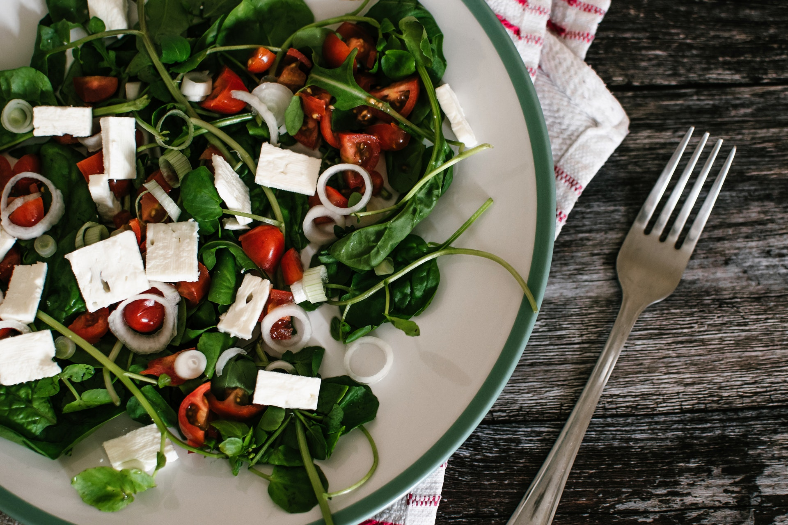

Fabulous Greek/House Dressing Salad Recipe

Description
The recipe makes almost a gallon but can be scaled down easily. It can be used for picnics and travels
very well, since it doesn't need to be refrigerated. This is the best dressing I have ever tasted,
people offer to buy it constantly, but if we sold it we wouldn't be able to make enough to
use in the restaurant!
Ingredients
- ½ quarts olive oil
- ⅓ cup garlic powder
- ⅓ cup dried oregano
- ⅓ cup dried basil
- ¼ cup pepper
- ¼ cup salt
- ¼ cup onion powder
- ¼ cup Dijon-style mustard
- 2 quarts red wine vinegar
Steps
- In a very large container, mix together the olive oil, garlic powder, oregano, basil, pepper, salt,
onion powder, and Dijon-style mustard. Pour in the vinegar, and mix vigorously until well
blended. Store tightly covered at room temperature.
Back To Home Page